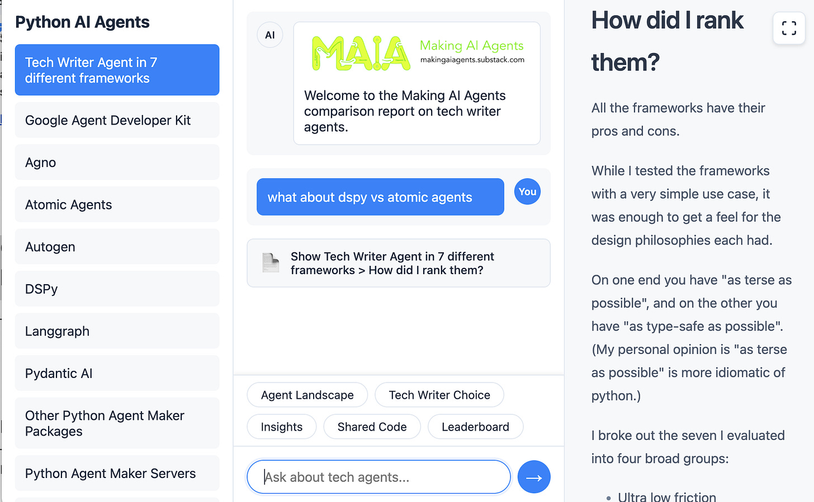

Which agent framework should you use? I tried 7. The winners will surprise you 🤯
I rewrote my "tech writer" agent in 7 frameworks: Agno, Autogen, Google ADK, Atomic Agents, DSPy, Langgraph, and Pydantic AI. You'll NEVER guess the winners.
NEW: try my experimental chatbot where you can read this article, browse the agent source code, and ask questions:

So you want to make an agent.
How useful are agent frameworks anyway?
In a past issue of Making AI Agents, I wrote a tech writer agent without a framework.
This "no framework" agent showed how simple agents can be, yet still have quite magical properties that were sci-fi just a few years back.
To answer the framework question, I implemented the exact same tech writer agent in a selection of different frameworks, and share my insights here.
But first, how many agent maker frameworks are there?
At last count I have identified approximately:
133 agent maker solutions
46 of which are open source
32 of those are in python
15 of those are python packages (while the rest run on dedicated servers)
So far, I have rewritten the tech writer agent seven different frameworks:
Agent Developer Toolkit (Google)
Agno
Atomic Agents
Autogen (Microsoft)
DSPy
Langgraph
Pydantic-AI
Why did you pick the tech writer agent for evaluation?
The tech writer agent answers plain-English questions about a github repo.
You give it a brief, and it will produce a report.
It solves the problem of how to answer a wide range of questions without needing to create different tools. E.g
Architect: give me an overview of the code base
New starter: give me a new starter guide
Release engineering: what is involved in deploying this code?
These all can be answered by the same agent: in the past they'd have required quite different and complex scripts, or a lot of eyeball time.
So the tech writer agent is a great combination of being both very simple, and very useful.
What did I learn?
For a simple agent like my tech writer, the agent frameworks are useful, but not essential.
Their power may come into play with more complex scenarios such as interactive chat or multi-agent support, which I'll cover in future issues of Making AI Agents.
To explain my choices, let me go back to the essential components of an agent.
The building blocks of an agent

There are 3 essential building blocks of an agent:
The language model
Tools it calls
Memory
As such, a good agent framework makes light work of these 3 things:
Language model: the right language model depends on the use case: they are not set and forget. How easy is it to switch models?
Tools: ideally I just point the agent at my python functions. Can I use everyday python functions with no fuss?
Memory: unless it's unavoidable, I shouldn't have to worry about how the agent remembers its actions. Do I have to be bothered with how the agent manages its memory?
When agents answer these three questions well, they also require less code to write.
To this end, of the 7 I initially chose, standout agent makers were DSPy and Agno, both being very compact and flexible.
What did I standardise on?
A rule that in the end added a smidge of complexity to every agent was a firm rule: "use the common functions and constants wherever possible".
See, I had this idea that it would be fairer to the frameworks by having a few standard things:
Standard prompts
Standard tools
This turned out to be a mixed blessing:
Input and output formats did vary a bit, so sometimes an agent would need to do a bit more wrapping than perhaps would normally be required
It did however ensure that the complex functionality of .gitignore-enabled hierarchical file search worked consistently, and that the prompts were the same (mostly)
Also I standardised on execution: they all use uv, the new hotness when it comes to python package management. Uv was the right choice: it's ultra fast and made it easy to create isolated agent environments to avoid any potential conflicts.
How did I rank them?
All the frameworks have their pros and cons.
While I tested the frameworks with a very simple use case, it was enough to get a feel for the design philosophies each had.
On one end you have "as terse as possible", and on the other you have "as type-safe as possible". (My personal opinion is "as terse as possible" is more idiomatic of python.)

I broke out the seven I evaluated into four broad groups:
Ultra low friction
Low friction
Perfectly acceptable
Higher friction
Are any really bad? They're all mostly harmless, except I found Atomic Agents type-safe verbosity something I'd not want to repeat.
Where does the value of these frameworks come in then, for my use case?
Ultra-low friction
DSPy 2.6.17: super concise.
Agno 1.5.10: compact; could be even more so
Low friction
Autogen 0.6.1: hard-coded LLM supoprt
Perfectly acceptable
Google ADK 0.1.0: Google bias harms it
LangGraph 0.4.8: complex tool definitions
Pydantic-AI 0.2.16b: complex tool definitions
Higher friction
Atomic Agents: overengineered for my use case
Google Agent Developer Kit
Browse the source code in my experimental chatbot.
At around 115 lines, this is a good, concise framework to work with:
It's compact and optionally has server capabilities for running the agent as a server with visual tools.
Part of a larger visual / server solution: while it can be run in isolation without a server, it's clearly intended by default to be run as a server. It is also a response to Microsoft's Autogen, offering a very powerful web-based studio tool., I expect significant work to happen on this in the coming quarters, possibly further integrated with other tools in Google's Dev ecosystem (like aistudio.google.com, jules.google, and various others).
Note also that about 10 lines of the agent was comments I thought necessary to help with the new concepts ADK presents.
Downsides are slight:
Annoying: it doesn't have a standard way to access language models: it has one way for Gemini and one for all others, hence my "stupid_hack_to_get_model()" function. To me this just adds unecessary friction.
It is slightly more complex in that it needs the concept of a session, which holds memory. This is in contrast to many other agents that encapsulate it away entirely. I respect this abstraction but given for my use case there was no real need to use these concepts other than to pass them back to more ADK APIs, there could be merit in considering a higher level offering that doesn't need sessions or user ids.
Agno
Browse the source code in my experimental chatbot
Clocking in at 72 lines Agno is by far the most compact and cleanest implementation of my tech writer agent.
It could also be made even more compact if it had a universal way to instantiate a language model using the emergent format that many frameworks and tools support, specifying vendor and model id separated by a slash or colon e.g. "openai:gpt-4.1-mini" or "anthropic/claude-sonnet-4.0", such as supported by LangChain, LiteLLM, and OpenRouter (to name a few).
As it stands, Agno requires specific class usage for each vendor, and as my code has a string as input, I have a ModelFactory wrapper to do this hackery directly.
Why did Agno do this? I think there's a misunderstanding here about how language models are used.
They are absolutely not a set-and-forget solution: business-as-usual with AI engineering is to evaluate a range of models for a given use case, so having a set of different models from different vendors is absolutely normal. It's rare I find myself committing solidly to a particular language model at all – even operationally I might want to bac
Atomic Agents
Browse the source code in my experimental chatbot
This is by far the highest friction framework, clocking in at around 224 lines, which is ironic given one of its biggest selling points is being "extremely lightweight".
It leans heavily on Instructor and Pydantic, two very respectable frameworks to help type safety and data integrity, and to that end I respect their approach.
However, writing the agent, it was absolutely the highest friction approach, for instance needing separate classes for a single tool specification.
Honestly there's a point where this really starts feeling like it's moving away from Python idioms to something heavier-weight like Java.
The other big hassle was its fragmentation of prompts into separate aspects, which felt like busywork as ultimately it just stitches it all back together into one piece of text. If you want strongly-typed inputs and outputs, take a look at DSPy which does this very elegantly and compactly.
Autogen
Browse the source code in my experimental chatbot
At 124 lines, this was a middle-of the road implementation.
Autogen was actually one of the first agent frameworks, and it has a very comprehensive Autogen Studio too which I covered briefly in a past issue.
Its LLM implementation relies entirely on a vendor supporting the OpenAI API protocol (which almost all do), with an unfortunate restriction to a subset that it specifically lists.
Relying on OpenAI's API is a completely reasonable thing to do and I'd love to see it open up to be more flexible to support other models and vendors too.
Finally, its tool support is fairly lightweight too; I only had to add async wrappers to the tools, which otherwise just worked.
DSPy
Browse the source code in my experimental chatbot
I place DSPy among the top of my rankings, which is quite remarkable given it's not first and foremost a dedicated agent framework, per se.
It is unusual in that, unlike the others, it's not "just an LLM wrapper".
It has a completely novel approach to specifying prompts that later, with operational data, can be optimised using very sophisticated optimisation techniques.
Clocking in at 99 lines this is a very compact solution because:
It can use any python function as a tool directly
It uses LiteLLM for LLM instantiation, so it accepts "<vendor>/<model id>" combos directly
Like Atomic Agents, it has typed input and outputs using Pydantic under the hood, but also manages to be extremely terse.
It has a ReAct agent built-in
The only point of friction is what I consider bordering on "docstring abuse": DSPy uses docstrings as a functional source of prompts.
This might look nice, but actually a) docstrings are not functional parts of the code and really should only be used to document behaviour and b) as a result it's a bit of a hack to use external variables as prompts.
To this end, 25 lines of the file is a duplication of the prompts defined in my common utils. An alternative implementation would do this:
class.__doc__ = <TECH_WRITER_SYSTEM_PROMPT>
… but this is hacky, and if you're looking at it as a normal DSPy program, you might wonder why it has no prompt.
Langgraph
Browse the source code in my experimental chatbot
At around 155 lines, this is another decent framework that keeps things simple for the tech writer use case because:
It has a ReAct agent built-in
It supports vendor/model configuration strings
Tools could be lower friction though.
Honestly my python isn't good enough to understand why it's a problem, but unlike most other frameworks, Langgraph tools have extra complexity around the context in which a tool operates.
This translates to what amounts to a fairly lightweight wrapper to pass the directory being scanned.
I really tried to understand why Langgraph couldn't figure this out directly like other frameworks, but left it as-is.
Maybe a proper python practitioner or Langgraph expert can improve this.
Pydantic AI
Browse the source code in my experimental chatbot
From the creators of the amazing type safety / object-relational mapping library Pydantic comes Pydantic AI.
My attempt at writing the tech writer in Pydantic AI clocked in at the slightly heavier 123-odd lines of code.
The only reason this wasn't one of the lightest was its specific way to define tools:
python methods require the
@<agent_name>.toolannotationOptionally, it also requires a RunContext parameter to pass the directory of code being analysed.
Again, as for Langgraph, I don't understand python scoping rules enough to understand why this additional wrapper was required when other frameworks don't need it, but it translates to slightly higher friction and cognitive load as you have to understand what a RunContext is and why it's required.
Other python agent maker frameworks
In future I hope to cover the remaining 8 python package agent makers I've found so far:
BeeAI (IBM)
Semantic Kernel (Microsoft, multilingual)
Smolagents (HuggingFace)
Other python agent makers
In addition, there are around 15 other open source python solutions, available only, as far as I could make out, as standalone servers. These I'll also assess at some point, but many cannot easily be scripted, they will be a lot more involved to assess:
TypeScript agent makers
Outside Python the second largest set of open source agent makers are those made in TypeScript.
Other languages
There are agent frameworks available in PHP, Ruby, Golang and Rust. I'll explore those in time.


Thanks for sharing. DSpy use LiteLLM, I heard LiteLLM can't be used in production due to its performance